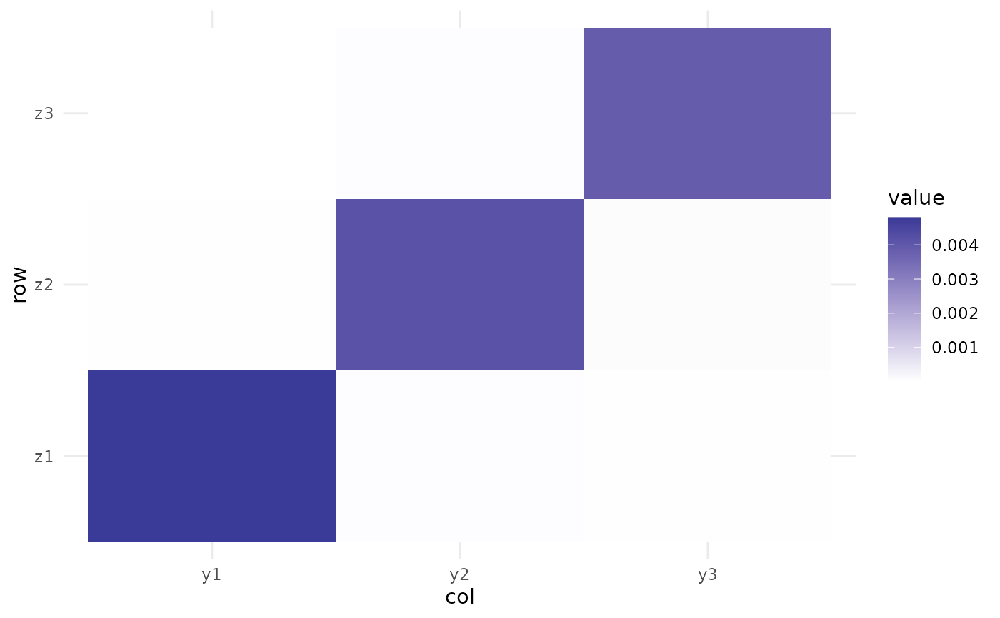

To avoid overplotting, plots data for a maximum of 1000 nodes. If there are more than 1000 nodes, samples 1000 nodes randomly proportional to row norms (i.e. nodes with embeddings larger in magniture are more likely to be sampled).
Arguments
- fa
A
vsp_fa()object.- factors
The specific columns to index into. The most reliable option here is to index with an integer vector of column indices, but you could also use a character vector if columns have been named. By default returns all factors/singular vectors.
- ...
Arguments passed on to
GGally::ggpairsdatadata set using. Can have both numerical and categorical data.
mappingaesthetic mapping (besides
xandy). Seeaes(). Ifmappingis numeric,columnswill be set to themappingvalue andmappingwill be set toNULL.columnswhich columns are used to make plots. Defaults to all columns.
title,xlab,ylabtitle, x label, and y label for the graph
uppersee Details
lowersee Details
diagsee Details
paramsdeprecated. Please see
wrap_fn_with_param_argaxisLabelseither "show" to display axisLabels, "internal" for labels in the diagonal plots, or "none" for no axis labels
columnLabelslabel names to be displayed. Defaults to names of columns being used.
labellerlabeller for facets. See
labellers. Common values are"label_value"(default) and"label_parsed".switchswitch parameter for facet_grid. See
ggplot2::facet_grid. By default, the labels are displayed on the top and right of the plot. If"x", the top labels will be displayed to the bottom. If"y", the right-hand side labels will be displayed to the left. Can also be set to"both"showStripsboolean to determine if each plot's strips should be displayed.
NULLwill default to the top and right side plots only.TRUEorFALSEwill turn all strips on or off respectively.legendMay be the two objects described below or the default
NULLvalue. The legend position can be moved by using ggplot2's theme elementpm + theme(legend.position = "bottom")- a single numeric value
provides the location of a plot according to the display order. Such as
legend = 3in a plot matrix with 2 rows and 5 columns displayed by column will return the plot in positionc(1,2)- a object from
grab_legend() a predetermined plot legend that will be displayed directly
cardinality_thresholdmaximum number of levels allowed in a character / factor column. Set this value to NULL to not check factor columns. Defaults to 15
progressNULL(default) for a progress bar in interactive sessions with more than 15 plots,TRUEfor a progress bar,FALSEfor no progress bar, or a function that accepts at least a plot matrix and returns a newprogress::progress_bar. Seeggmatrix_progress.proportionsValue to change how much area is given for each plot. Either
NULL(default), numeric value matching respective length,grid::unitobject with matching respective length or"auto"for automatic relative proportions based on the number of levels for categorical variables.legendsdeprecated
Value
A ggplot2::ggplot() plot or GGally::ggpairs() plot.
Functions
plot_varimax_y_pairs(): Create a pairs plot of select Z factorsplot_svd_u(): Create a pairs plot of select left singular vectorsplot_svd_v(): Create a pairs plot of select right singular vectors
Examples
data(enron, package = "igraphdata")
fa <- vsp(enron, rank = 3)
#> This graph was created by an old(er) igraph version.
#> ℹ Call `igraph::upgrade_graph()` on it to use with the current igraph version.
#> For now we convert it on the fly...
plot_varimax_z_pairs(fa)
#> Registered S3 method overwritten by 'GGally':
#> method from
#> +.gg ggplot2

plot_varimax_y_pairs(fa)

plot_svd_u(fa)

plot_svd_v(fa)

screeplot(fa)

plot_mixing_matrix(fa)

plot_ipr_pairs(fa)
